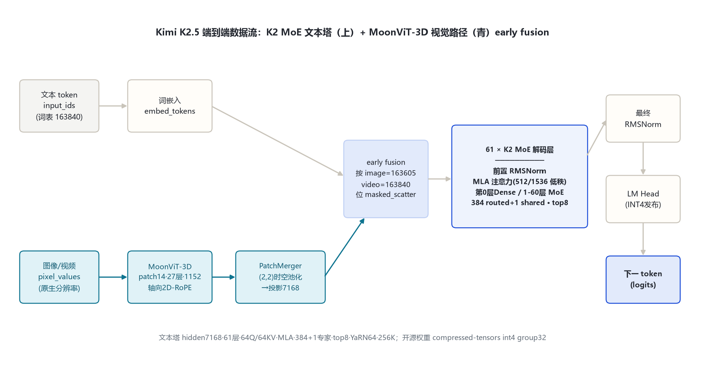
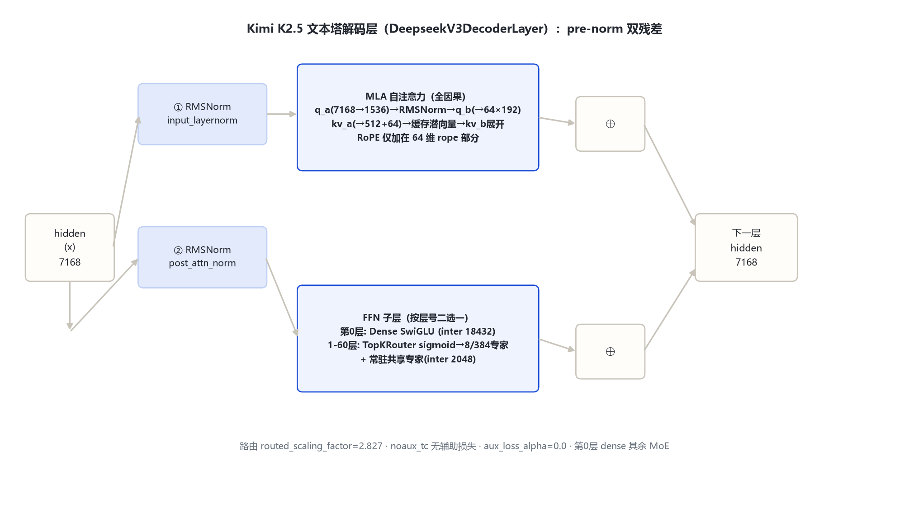

Kimi K2.5 在 Kimi K2（DeepSeek-V3 系 MLA + 384 专家 MoE，hidden 7168 / 61 层）文本底座上，early-fusion 联合预训练自研视觉编码器 MoonViT-3D（patch14 / 27 层 / 1152），构形为「视觉塔 + PatchMerger 投影器 + K2 MoE 文本塔」。transformers 入口类 KimiK25ForConditionalGeneration（model_type kimi_k25），开源权重为 compressed-tensors INT4。
K2.5 是原生多模态智能体模型，全部数值以远端官方 config（moonshotai/Kimi-K2.5，2026-10-31 拉取）为准；本机无权重。下表逐字段标来源。
| 字段 | 取值 | 来源 |
|---|---|---|
| architectures | KimiK25ForConditionalGeneration | 官方 config |
| text_config.model_type | kimi_k2 → 运行时重写为 deepseek_v3 | config + configuration_kimi_k25.py:53 |
| 层数 / hidden / Q·KV 头 | 61 层 · 7168 · 64 / 64 | 官方 config text_config |
| MLA | kv_lora 512 · q_lora 1536 · nope 128 · rope 64 · v 128 | 官方 config text_config |
| MoE | 384 routed + 1 shared · top-8 · moe_inter 2048 · first_k_dense_replace 1 | 官方 config text_config |
| dense FFN | intermediate 18432（仅第 0 层） | 官方 config text_config |
| 路由 | sigmoid · noaux_tc · routed_scaling 2.827 · aux_loss_alpha=0 | 官方 config text_config |
| RoPE / 上下文 | θ=50000 · YaRN factor 64 · max_position 262144 | 官方 config text_config |
| 词表 / tie | 163840 · tie=false（text_config） | 官方 config text_config |
| 视觉塔 | 有（patch14·27层·1152·16头·4304，见 §6） | 官方 config vision_config |
| 量化 | compressed-tensors int4 group32 dynamic act-order | 官方 config quantization_config |
| 特殊 token | image 163605 · video 163840 · vs 163602 · ve 163604 | config + configuration_kimi_k25.py:25 |

patch14、27 层、hidden 1152、16 头、FFN 4304、gelu_pytorch_tanh，双向非因果注意力，轴向 2D-RoPE，初始化自 SigLIP-SO-400M。
(2,2) 时空均值池化把 token 压到 1/4，再过 LN→Linear(4608→4608)→GELU→Linear(4608→7168)，对齐文本 hidden。
DeepSeek-V3 系 CausalLM：MLA 压缩注意力 + 384 专家 MoE，第 0 层 dense，1–60 层 MoE。
视觉塔先 caption-loss 对齐 Moonlight-16B-A3B（~1T token）→ 短训投影器桥接 → 联合预训练 ~15T 视-文 token（early fusion）→ YaRN 32K→262144。
文本塔解码层即 DeepseekV3DecoderLayer（源码 models\deepseek_v3\modeling_deepseek_v3.py:485-529），pre-norm 双残差：RMSNorm→MLA 注意力→残差；RMSNorm→FFN→残差。FFN 按层号二选一：第 0 层 dense SwiGLU（18432）；1–60 层 MoE（8 routed 专家加权 + 常驻共享专家）。

sigmoid 打分 + e_score_correction_bias 修正（:136-137），top-8 后归一化再乘 routed_scaling_factor 2.827；aux_loss_alpha=0，靠 bias 做负载均衡。
n_shared_experts=1，对每 token 都前向一次，与 routed 专家加权和相加（:220-221），承载跨专家通用知识。
merge_kernel (2,2) 时空均值池化，token ÷4；投影器 LN1152→Linear4608→GELU→Linear7168（modeling_kimi_k25.py:560-564）。
视觉 token 在 embedding 层按占位位 masked_scatter 填入文本序列，与文本 token 一起进 MoE 塔，早期固定低比例共训。
文本塔为 MLA（Multi-head Latent Attention），全因果、无滑窗、Q/KV 均 64 头，靠低秩潜向量压缩 KV cache：Query 经 q_a(7168→1536)→RMSNorm→q_b 展开；KV 经 kv_a(7168→512+64) 压缩后缓存，解码时 kv_b 展开；RoPE 仅加在 64 维 rope 部分。非线性注意力——KDA 线性注意力属独立家族 Kimi-Linear。
官方无独立「Kimi-K2-VL」仓库；K2 代 VL 即本模型（config 内嵌 vision_config），同架构亦用于 K2.6。视觉塔逐字段见下。
| 视觉塔字段 | 取值 | 说明 |
|---|---|---|
| patch / hidden / 层数 / 头 / FFN | 14 / 1152 / 27 / 16 / 4304 | 官方 config vision_config |
| 位置编码 / RoPE | 可学习 64×64 网格（超网格双三次插值）+ 轴向 2D-RoPE | configuration_kimi_k25.py:173-190 |
| merge / 投影器 | (2,2) 时空池化 · patchmerger · gelu | 官方 config vision_config |
| 原生分辨率 | 不切 tile，max_patches=16384 预算等比缩放 + NaViT 打平 | image_processing_kimi_k25.py:50-97 |
| 视频 | 最多 4 帧共享权重，时间均值池化 4× 压缩 | 论文 §4.2 |
图像 H×W → patch14 → grid_h×grid_w patch → 27 层双向视觉 Transformer → 2×2 空间池化 → (gh/2)(gw/2) 视觉 token → 投影 7168 → 按 image=163605 位 masked_scatter 填入。512×512 例：36×36 patch → 池化后 324 视觉 token。
词表 163840。bos=163584、eos=163585、pad=163839；视觉四元组 vs=163602 / image=163605 / video=163840 / ve=163604。上下文 262144（YaRN factor 64 从 4096 外推）。
1.04T-A32B 纯文本 MoE，DeepSeek-V3 系 MLA + 384 专家 top-8；本目录文本塔即其直接继承（K2 论文 arXiv:2507.20534）。
K2 底座 + MoonViT-3D 原生多模态；early-fusion 联合预训练；开源 INT4；routed_scaling 2.827。
同 kimi_k25 架构，config 与 K2.5 基本一致，eos=163586。
K2.7-Code、Kimi-K3、Kimi-Linear-48B-A3B（KDA 线性注意力）、Kimi-VL-A3B、Moonlight-16B-A3B。